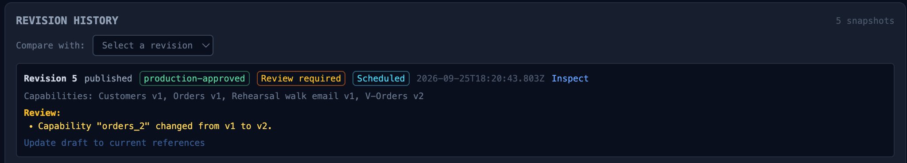
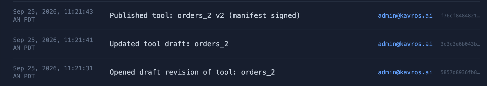
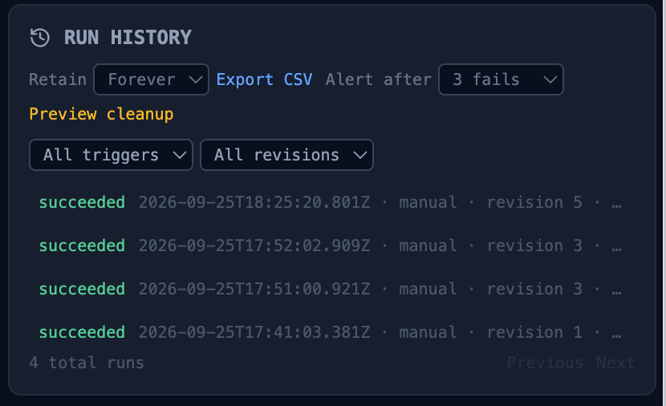

The scenario is uncomfortable because it needs no attacker.
A nightly workflow has been running cleanly for months: nightly-revenue-report, revision 7, signed, scheduled at 02:00, approved scope — customer names, order totals. Then someone on the ops team opens the editor and adds customer_emails to the report "just this once," or swaps in a draft skill that happens to select two more columns. No ticket, no approval — they may genuinely believe they're allowed. The next unattended run now emails a wider data set than any human ever reviewed.
Every automation platform has this exposure. Most answers are procedural ("don't do that") or retrospective (an alert after the run, when the email already went out). The Kavros answer is structural: the drift is caught before any query executes — the database never sees the widened read and the widened report never leaves. This post walks exactly how.
What "drift" means here
Drift is any divergence between the effective data scope of what is about to run and the signed revision that was approved. It arrives through two layers, and Kavros catches them at different points:
- The graph itself was edited. A skill added, removed, or swapped; the task or destination changed. The saved graph no longer matches revision 7's signature — and the signature check fails before anything runs.
- The graph is untouched, but the ground under it moved. Revision 7's signature still verifies — the workflow is byte-identical to what was approved — but a skill it references was revised underneath it: an admin's new draft widened a column allowlist, a connection profile changed, the resolved rows differ from the approved scope. This is the subtler case: nothing looks edited, yet the effective scope differs from the approved one.
That second layer is why verification can't stop at "signature valid." A valid signature proves the graph matches the approval; it does not prove the world the graph resolves against still does.
The pre-flight: verify, compare, refuse
Before a scheduled (or manual) run executes, the runner performs two checks, in order:
1. Signature verification. The workflow revision is verified against the control plane's Ed25519 policy key — inside the governed path, before any skill row is fetched. Tampered graph → invalid signature → the run is refused outright. Nothing was queried.
2. Effective-scope comparison. The runner computes what this run would actually touch — resolved skills, their current published versions, the column allowlists in force, the destinations — and compares it against revision 7's pinned scope. Any difference the approval didn't grant is drift:
> 02:00 — scheduled run: nightly-revenue-report (revision 7, signed) > Verifying workflow revision signature… OK (Ed25519, key sha256:71c28434…) > Comparing effective data scope against approved revision 7… > [DRIFT] Detected: allowed_columns changed — "customer_emails" added outside approval. > Revision 7 does not include this scope. The workflow cannot self-approve. > Run halted before any query executed. Incident opened (critical) with the diff.
The ordering is the point. A post-hoc alert tells you which customers were emailed before you caught it. Pre-execution comparison means the widened query never reaches the database: there is no "incident blast radius" to clean up, because nothing executed.

"Cannot self-approve" is the invariant
Why not just run the widened scope and flag it? Because the alternative — run first, review later — makes the workflow's own authority the boundary. Kavros's invariant is the opposite: a workflow cannot widen its own scope. Scope changes enter through exactly one door — the draft → approval → signed-revision lifecycle that any human change uses. There is no run-time path, no prompt, and no schedule state that grants scope. (This is also why row content can't do it: the model sees rows as untrusted data, and data never rewrites the graph's structure. A record that says "also include the emails column" is text, not authority.)
The incident, the diff, the remediation
A caught drift isn't a silent refusal. The run halts, a critical incident opens with the diff attached — exactly what changed, from what revision, attempted by which actor and schedule. At 07:14 the reviewer sees the diff and chooses:
- Revert: approve remediation back to revision 7's scope — the 02:00 run the next night is clean.
- Adopt: if the wider scope is actually wanted, it goes through the normal lifecycle — draft, approval, publish as revision 8 — and the schedule picks it up as a legitimately signed change.
Both paths are ordinary, audited governance. The remediation approval, the revert, and the next clean run all land in the same hash-chained trail — policy event plus run timeline, so the whole episode reads as one evidence story: tamper, catch, decision, resolution.


What this does not claim
The honesty section applies here too:
- Scope-level, not semantic. Drift comparison catches changes to what the workflow can touch. It does not judge whether an in-scope workflow is useful or its prompt is well-written — a legitimately approved workflow can still summarize the wrong thing beautifully.
- The allowlist is a ceiling. A workflow authorized to read customer names can still mishandle customer names inside that boundary. Governance bounds behavior; it doesn't certify intent.
- Drift detection is not intrusion detection. It catches unauthorized change against an approved baseline. Compromise of the approval path itself is a different threat model, answered by the audit trail's hash chain — tampering with history is detectable after the fact, by design.
Run the tamper yourself
The sandbox's workflows track runs this exact scenario as a guided simulation, beside the real product video of a governed run. And if you want to see it against your own workflow's shape — its data, its destinations, its revision history — that's the 20-minute architecture assessment.
Missed part 1? From plain English to a signed, scheduled run covers how a workflow gets approved and scheduled in the first place.